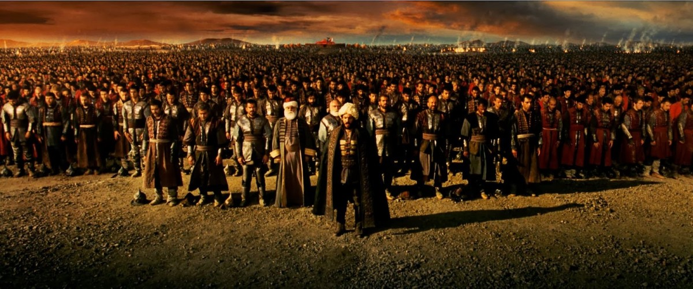
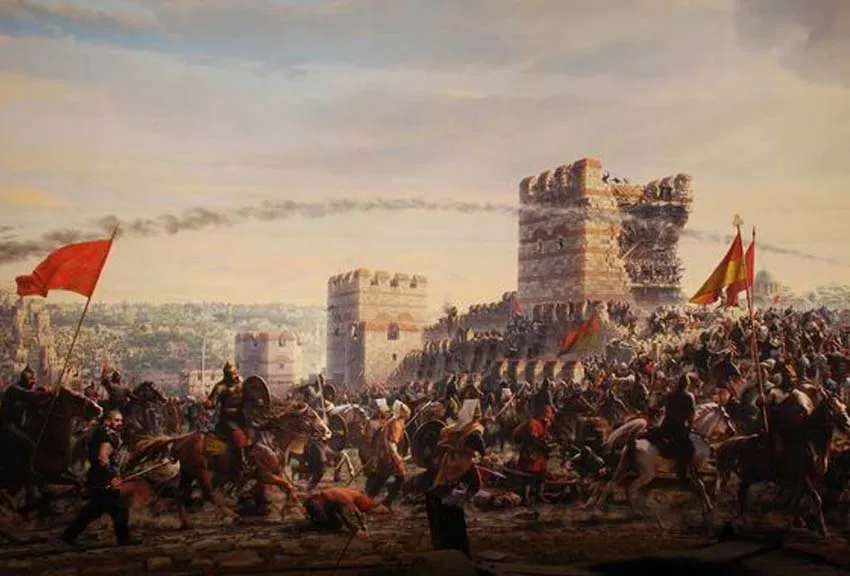
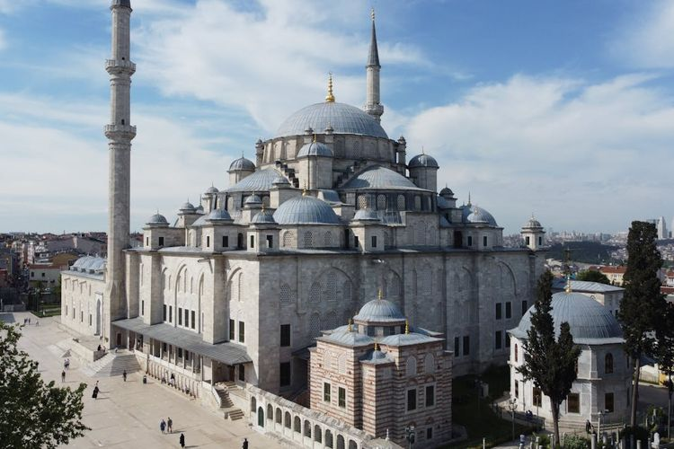
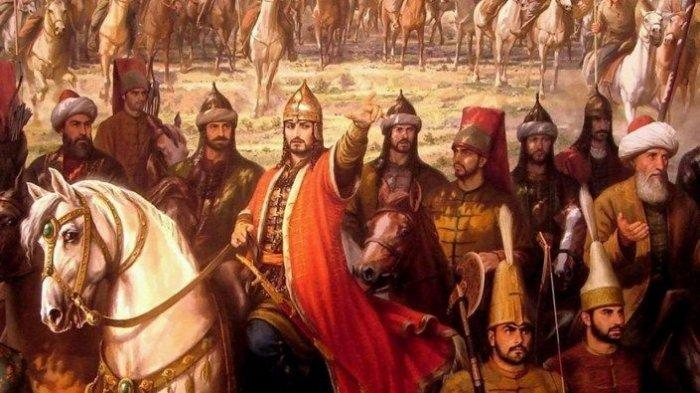
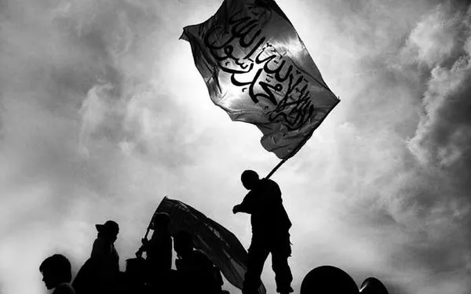

Introduction

Muhammad Al-Fatih, atau Mehmed II, adalah salah satu tokoh paling
berpengaruh dalam sejarah Kekaisaran Ottoman. Terkenal sebagai
penakluk Istanbul, keberhasilannya dalam merebut kota tersebut dari
Kekaisaran Bizantium pada tahun 1453 menandai perubahan besar dalam
peta politik Eropa dan Timur Tengah. Penaklukan ini tidak hanya
mengakhiri Kekaisaran Bizantium, tetapi juga menandai awal dari
dominasi Ottoman yang lebih besar di wilayah tersebut. Artikel ini
akan mengeksplorasi berbagai aspek kehidupan Muhammad Al-Fatih,
mulai dari biografi, penaklukan, warisan, dampak agama, hingga
kepemimpinan yang menjadikannya sebagai sosok legendaris.
Biography

Muhammad Al-Fatih lahir pada 30 Maret 1432 di Edirne, kekaisaran
Ottoman, sebagai putra Sultan Murad II. Sejak usia muda, ia
menunjukkan potensi yang luar biasa dalam hal kepemimpinan dan
militer. Pendidikan awalnya mencakup berbagai disiplin ilmu,
termasuk ilmu pengetahuan, bahasa, dan strategi militer. Ia belajar
langsung dari para ahli dan cendekiawan terbaik zaman itu, termasuk
yang berpengalaman dalam strategi perang dan pemerintahan.
Pada usia 19 tahun, setelah kematian ayahnya pada tahun 1451,
Muhammad Al-Fatih naik tahta sebagai Sultan. Meskipun masih muda, ia
segera menunjukkan kemampuannya dalam mengelola kekaisaran dan
mempersiapkan diri untuk tantangan besar yang akan datang. Di bawah
kepemimpinannya, Kekaisaran Ottoman mengalami reformasi besar dan
ekspansi wilayah yang signifikan.
Conquest

Penaklukan Istanbul adalah pencapaian terbesar Muhammad Al-Fatih dan
merupakan salah satu momen penting dalam sejarah dunia. Kota
Konstantinopel, yang merupakan ibu kota Kekaisaran Bizantium, telah
menjadi pusat kekuasaan dan perdagangan yang strategis selama
berabad-abad. Muhammad Al-Fatih memulai pengepungan Istanbul pada 6
April 1453 dengan kekuatan militer yang besar dan persiapan yang
matang.
Untuk menaklukkan kota yang terkenal dengan pertahanannya yang
kokoh, Muhammad Al-Fatih menggunakan berbagai strategi inovatif. Ia
mengerahkan artileri berat, termasuk meriam besar yang dikenal
sebagai "Basilica" untuk merobohkan tembok kota. Selain itu, dia
memimpin usaha penyanderaan dan pengepungan yang intensif, memblokir
jalur laut dan pasokan untuk melemahkan pertahanan Bizantium.
Pada 29 Mei 1453, setelah hampir dua bulan pengepungan, kota
Istanbul akhirnya jatuh ke tangan Ottoman. Penaklukan ini tidak
hanya menandai akhir Kekaisaran Bizantium tetapi juga merubah
lanskap politik Eropa dan Timur Tengah. Muhammad Al-Fatih meresmikan
kota sebagai ibu kota baru Kekaisaran Ottoman dan mengubah Hagia
Sophia menjadi masjid, simbol kemenangan dan kekuatan baru.
Legacy

Warisan Muhammad Al-Fatih sangat luas dan mendalam. Penaklukannya
atas Istanbul mengubah kota tersebut menjadi pusat budaya dan
ekonomi utama dunia Islam. Setelah penaklukan, Muhammad Al-Fatih
memulai serangkaian proyek besar untuk membangun kembali dan
memperindah kota. Ia membangun berbagai infrastruktur, termasuk
masjid, sekolah, dan rumah sakit, yang memperkuat posisi Istanbul
sebagai pusat peradaban.
Salah satu kontribusi terbesarnya adalah dalam bidang arsitektur. Di
bawah pemerintahannya, Istanbul mengalami periode pembangunan yang
signifikan, termasuk pembangunan Masjid Fatih, yang menjadi salah
satu masjid utama di kota tersebut. Warisan budaya dan arsitektur
ini terus dikenang dan dihargai hingga hari ini.
Leadership

Kepemimpinan Muhammad Al-Fatih diakui karena kemampuannya dalam
berbagai aspek pemerintahan. Selain keterampilannya sebagai pemimpin
militer, ia juga seorang reformis yang berfokus pada pengembangan
sistem pemerintahan dan administrasi. Dia memperkenalkan reformasi
hukum dan pajak yang meningkatkan efisiensi pemerintahan dan
kesejahteraan rakyatnya.
Kemampuan Muhammad Al-Fatih dalam diplomasi juga sangat menonjol. Ia
berhasil membangun aliansi strategis dengan berbagai negara dan
memelihara stabilitas internal kekaisaran. Kepemimpinannya yang
bijaksana dan strategis memastikan bahwa Kekaisaran Ottoman tetap
menjadi kekuatan dominan di wilayah tersebut selama berabad-abad.
Religious Impact

Muhammad Al-Fatih memiliki dampak signifikan terhadap perkembangan
agama Islam. Dengan menaklukkan Istanbul, ia memperkuat posisi Islam
di wilayah yang sebelumnya dikuasai oleh Kekaisaran Bizantium.
Penaklukan ini memfasilitasi penyebaran Islam di Eropa Timur dan
meningkatkan interaksi budaya antara dunia Islam dan Eropa.
Ia juga dikenal karena toleransi religiusnya, memungkinkan komunitas
Kristen dan Yahudi untuk terus hidup di bawah pemerintahan Ottoman.
Kebijakan ini menunjukkan pendekatan pragmatis Muhammad dalam
mengelola keberagaman agama dan etnis di kekaisaran yang luas.